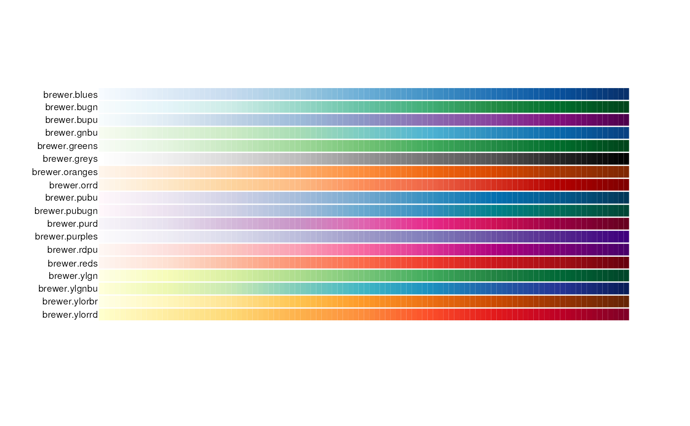
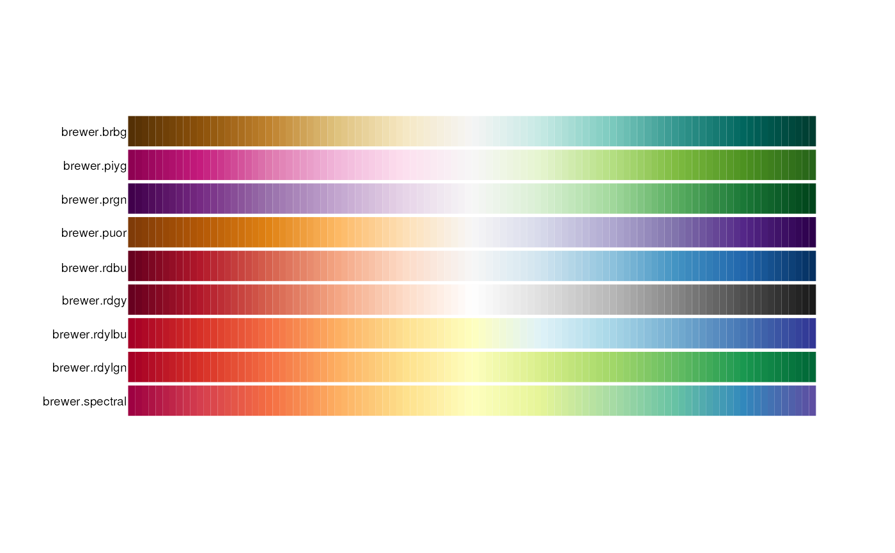
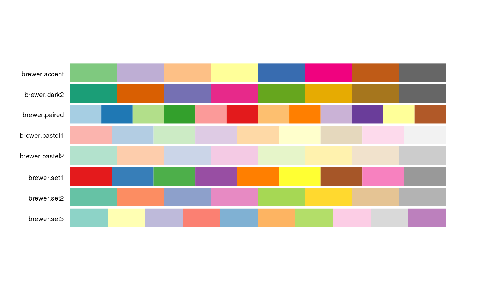

These functions provide a unified access to the ColorBrewer palettes.
brewer.blues(n)
brewer.bugn(n)
brewer.bupu(n)
brewer.gnbu(n)
brewer.greens(n)
brewer.greys(n)
brewer.oranges(n)
brewer.orrd(n)
brewer.pubu(n)
brewer.pubugn(n)
brewer.purd(n)
brewer.purples(n)
brewer.rdpu(n)
brewer.reds(n)
brewer.ylgn(n)
brewer.ylgnbu(n)
brewer.ylorbr(n)
brewer.ylorrd(n)
brewer.brbg(n)
brewer.piyg(n)
brewer.prgn(n)
brewer.puor(n)
brewer.rdbu(n)
brewer.rdgy(n)
brewer.rdylbu(n)
brewer.rdylgn(n)
brewer.spectral(n)
brewer.accent(n)
brewer.dark2(n)
brewer.paired(n)
brewer.pastel1(n)
brewer.pastel2(n)
brewer.set1(n)
brewer.set2(n)
brewer.set3(n)The number of colors to display for palette functions.
A vector of colors.
The palette names begin with 'brewer' to make it easier to use auto-completion.
# Sequential
pal.bands(brewer.blues, brewer.bugn, brewer.bupu, brewer.gnbu, brewer.greens,
brewer.greys, brewer.oranges, brewer.orrd, brewer.pubu, brewer.pubugn,
brewer.purd, brewer.purples, brewer.rdpu, brewer.reds, brewer.ylgn,
brewer.ylgnbu, brewer.ylorbr, brewer.ylorrd)

# Diverging
pal.bands(brewer.brbg, brewer.piyg, brewer.prgn, brewer.puor, brewer.rdbu,
brewer.rdgy, brewer.rdylbu, brewer.rdylgn, brewer.spectral)

# Qualtitative
pal.bands(brewer.accent(8), brewer.dark2(8), brewer.paired(12), brewer.pastel1(9),
brewer.pastel2(8), brewer.set1(9), brewer.set2(8), brewer.set3(10),
labels=c("brewer.accent", "brewer.dark2", "brewer.paired", "brewer.pastel1",
"brewer.pastel2", "brewer.set1", "brewer.set2", "brewer.set3"))

if (FALSE) {
# Sequential
pal.test(brewer.blues)
pal.test(brewer.bugn)
pal.test(brewer.bupu)
pal.test(brewer.gnbu)
pal.test(brewer.greens)
pal.test(brewer.greys)
pal.test(brewer.oranges)
pal.test(brewer.orrd)
pal.test(brewer.pubu) # good
pal.test(brewer.pubugn) # good
pal.test(brewer.purd)
pal.test(brewer.purples)
pal.test(brewer.rdpu)
pal.test(brewer.reds)
pal.test(brewer.ylgn)
pal.test(brewer.ylgnbu)
pal.test(brewer.ylorbr)
pal.test(brewer.ylorrd)
# Diverging, max n=11 colors
pal.test(brewer.brbg)
pal.test(brewer.piyg)
pal.test(brewer.prgn)
pal.test(brewer.puor)
pal.test(brewer.rdbu)
pal.test(brewer.rdgy)
pal.test(brewer.rdylbu)
pal.test(brewer.rdylgn)
pal.test(brewer.spectral)
# Qualtitative. These are weird...don't do this
pal.test(brewer.accent)
pal.test(brewer.dark2)
pal.test(brewer.paired)
pal.test(brewer.pastel1)
pal.test(brewer.pastel2)
pal.test(brewer.set1)
pal.test(brewer.set2)
pal.test(brewer.set3)
# Need to move these to 'tests'
pal.bands(brewer.accent(3), brewer.accent(4), brewer.accent(5), brewer.accent(6),
brewer.accent(7), brewer.accent(8), brewer.accent(9), brewer.accent(10),
brewer.accent(11), brewer.accent(12))
#brewer.purd(1) # Should err
#brewer.purd(2) # Should err
brewer.purd(3)
brewer.purd(9)
brewer.purd(25)
pal.bands(brewer.purd(3), brewer.purd(4), brewer.purd(5), brewer.purd(6),
brewer.purd(7), brewer.purd(8), brewer.purd(9), brewer.purd(10),
brewer.purd(11), brewer.purd(12), brewer.purd(13), brewer.purd(14),
brewer.purd(15), brewer.purd(100))
}